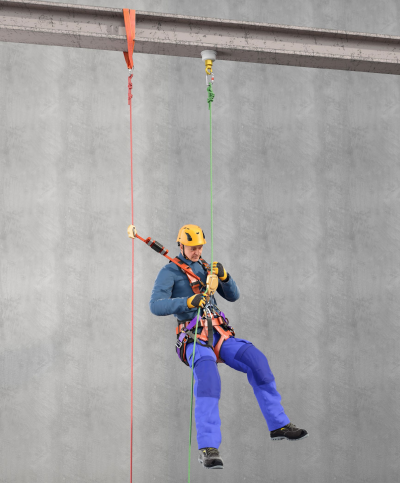
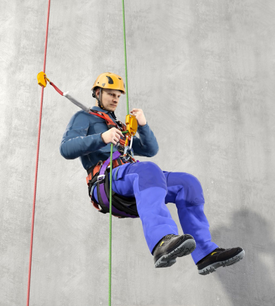
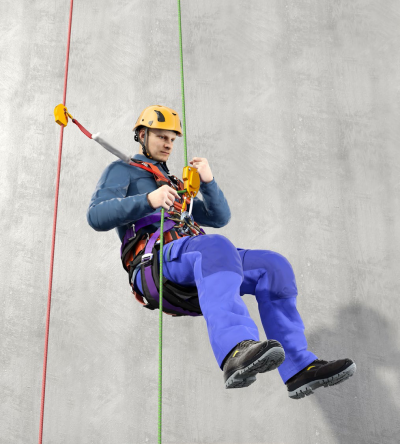
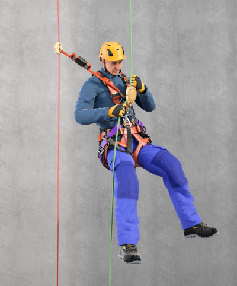

Im Sinne dieser DGUV Information werden folgende Begriffe bestimmt:
1. Arbeiten unter Verwendung von seilunterstützten Zugangs- und Positionierungsverfahren (SZP) sind alle Verfahren, bei denen die Anwender und Anwenderinnen sich planmäßig an Seilen oder Verbindungsmitteln als Trag- und Sicherungssystem (Redundanz) horizontal, diagonal oder vertikal fortbewegen und/oder positionieren (siehe Abbildung 1).

Abb. 1 Unabhängig voneinander angeschlagenes Tragseil (hier grün) und Sicherungsseil (hier rot).
2. Tragsystem ist die Gesamtheit von Anschlageinrichtung(en) mit Tragseil, Seileinstellvorrichtung sowie Arbeitssitz bzw. Sitzbrett.
3. Sicherungssystem ist die Gesamtheit von Anschlageinrichtung(en), Sicherungsseil, Seileinstellvorrichtung sowie einer Körperhaltevorrichtung.
4. Anschlageinrichtungen sind dauerhaft oder nicht dauerhaft am Gebäude, der Struktur oder anderen Objekten befestigt und müssen jeweils für Trag- und Sicherungsseil unabhängig voneinander verwendet werden.
5. Anschlagmöglichkeiten sind temporär benutzbare, ausreichend tragfähige Bestandteile baulicher Anlagen, des Bauwerks, der Struktur oder anderen Objekten an denen temporäre Anschlageinrichtungen oder Trag- und Sicherungsseil direkt befestigt werden können.
6. Strukturen sind Teile von Bauwerken oder Konstruktionen, z. B. Stahlträger, Verstrebungen oder Pfeiler.
7. Verbindungselemente sind z. B. Karabinerhaken.
8. Verbindungsmittel können aus Chemiefasern (Seilen und Bändern), Drahtseilen oder Ketten hergestellt sein. Sie sind mit geeigneten Endverbindungen ausgestattet.
9. Seileinstellvorrichtungen sind Bestandteile in Trag- und Sicherungssystemen, die in Abhängigkeit von der jeweiligen Ausführung der Positionierung, dem Auf- oder Abstieg oder der Sicherung gegen Absturz dienen.
10. Körperhaltevorrichtungen können Auffanggurte in Kombination mit ergonomisch gestalteter Sitzfläche (Sitzbrett, siehe Abbildung 2), ergonomisch vergleichbare sitzähnliche Gurtsysteme (Arbeitssitz, siehe Abbildung 3) oder geeignete Auffanggurte (siehe Abbildung 4) sein, von denen aus Höhenarbeiter bzw. Höhenarbeiterinnen sitzend Arbeiten verrichten.

Abb. 2 Beispiel einer ergonomisch gestalteten Sitzbretts

Abb. 3 Beispiel eines Arbeitssitzes

Abb. 4 Beispiel eines geeigneten Auffanggurtes
11. Auffangssystem ist ein persönliches Absturzschutzsystem, das bei einem freien Fall, nach dem Versagen des Tragsystems, die Person auffängt und die auf den Körper einwirkende Fangstoßkraft reduziert.
12. Höhenarbeiter und Höhenarbeiterinnen sind qualifizierte Personen mit bestandener Prüfung, die mit Hilfe von seilunterstützten Zugangs- und Positionierungsverfahren Arbeiten durchführen. Hierzu zählen beauftragte Beschäftigte, Unternehmer, Unternehmerinnen und Solo-Selbstständige.
13. Qualifikationsstandards sind z. B. die von Verbänden aufgestellten Regelungen zur Qualifizierung von Höhenarbeitern und Höhenarbeiterinnen.